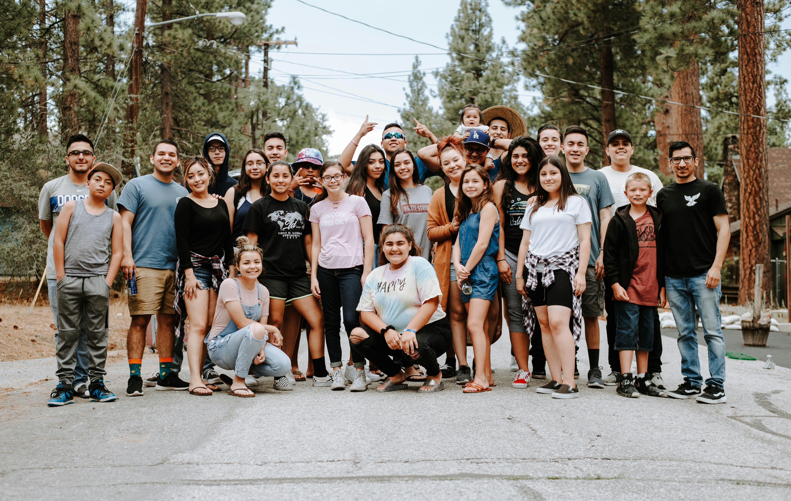

Our Story
UM Church Cape Town was built on faith, community and commitment to excellence.

Our Mission
To bring hope, faith and real community to the city.

Pastor John
Lead Pastor

Our Home
Since 2018

Community
Youth & Outreach
UM Church Cape Town was built on faith, community and commitment to excellence.
To bring hope, faith and real community to the city.
Lead Pastor
Since 2018

Youth & Outreach